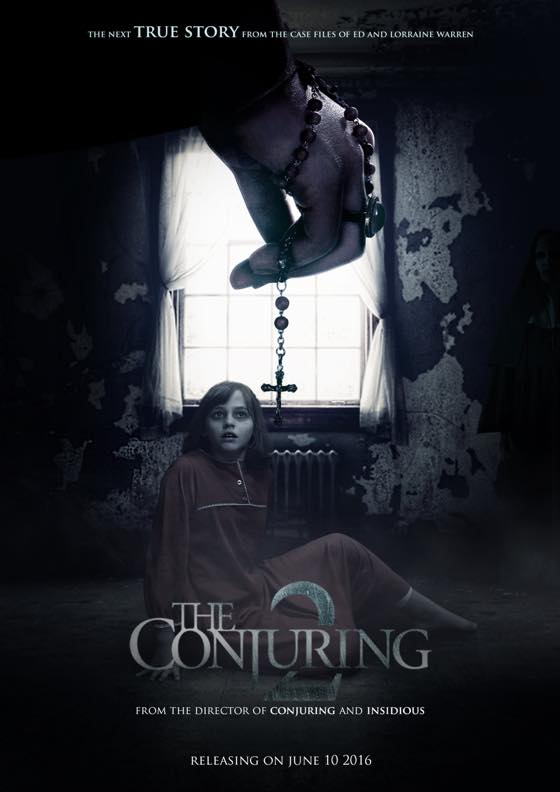

인터넷에서 컨저링2 에 나오는 수녀메이크업 동영상을보고 갑자기 영화가 보고싶어져서 (...의식의 흐름이 ㅋㅋㅋ) 급결정
올해 6월에 개봉한 영화네용;; 아무런 사전정보 없이 충동적으로 본건데 배경이 런던 / 엔필드 인걸 알고 깜놀;;
워메 나 저기알어;; 저동네 가봤어;; 뭐 이런 소릴하며 영화를 봤습니다 ^^;;;
대부분 호러무비 속편은 재미가 떨어지는데 오히려 일편보다 훈늉했어요.
재미있게 잘봤습니다. 수녀귀신 볼때마다 마릴린맨슨 닮았다....란 생각을 했더랬죠 ㅋㅋ
에나벨도 조만간 찾아봐야겠습니다 홋홋